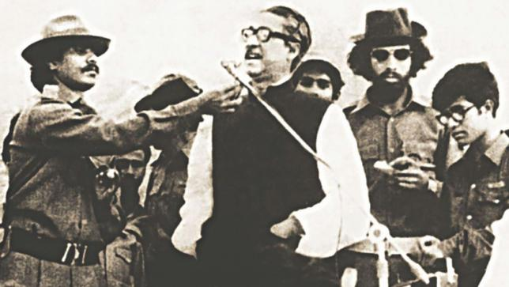
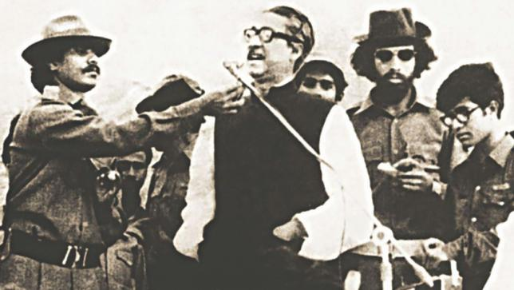

ABOUT ME
Bangladesh, officially the People's Republic of Bangladesh, is a country in South Asia. While the country is the 92nd-largest in land area, spanning 147,570 square kilometres (56,980 sq mi), it is the world's 8th-most populous with nearly 163 million people, making it one of the most densely populated countries in the world. Bangladesh shares land borders with India to the west, north, and east, Myanmar to the southeast, and the Bay of Bengal to the south. It is separated from Nepal and Bhutan by the narrow Siliguri Corridor in the north and from China by the indian state of Sikkim in the northeast. Dhaka, the capital and largest city, is the nation's economic, political and cultural hub. Chittagong, the largest sea port, is the second largest city. The dominant geographic feature is the Ganges delta, which empties into the Bay of Bengal the combined waters of several river systems, including the Brahmaputra and the Ganges, with numerous criss-crossing rivers and inland waterways. Highlands with evergreen forests cover the northeastern and southeastern regions. The seacoast features the longest natural sea beach and most of the world's largest mangrove forest. The country's biodiversity includes a vast array of plants and wildlife, including the endangered Bengal tiger, the national animal.
Bangladesh forms the largest and eastern part of the Bengal region. According to the ancient Indian epics, Ramayana and Mahabharata, the Vanga Kingdom, one of the namesakes of the Bengal region, was a strong naval ally of the legendary Ayodhya. In the ancient and classical period of the Indian subcontinent, the territory was home to many principalities, including the Pundra, Gangaridai, Gauda, Samatata and Harikela. It was also a Mauryan province under the reign of Ashoka. The principalities were notable for their overseas trade, contacts with the Roman world, export of fine muslin and silk to the Middle East, and spreading of philosophy and art to Southeast Asia. The Pala Empire, the Chandra dynasty, and the Sena dynasty were the last pre-Islamic Bengali middle kingdoms. Islam was introduced during the Pala Empire, through trade with the Abbasid Caliphate, but following the early conquest of Bakhtiyar Khalji and the subsequent establishment of the Delhi Sultanate and preaching of Shah Jalal in East Bengal, the faith fully spread across the region. In 1576, the wealthy Bengal Sultanate was absorbed into the Mughal Empire, but its rule was briefly interrupted by the Suri Empire. Following the death of Emperor Aurangzeb in the early 1700s, the proto-industrialised Mughal Bengal became a semi-independent state under the Nawabs of Bengal. The region was later conquered by the British East India Company at the Battle of Plassey in 1757. The borders of modern Bangladesh were established with the separation of Bengal and India in August 1947, when the region became East Pakistan as a part of the newly formed State of Pakistan, demarcated by the Boundary of the Partition of India. Later the rise of the Bengali nationalist and self-determination movement led to the Liberation War and eventually resulted in the emergence of Bangladesh as a sovereign nation in 1971.
The Bengali ethnicity, speakers of the official Bengali language, make up 98% of the population. The politically dominant Bengali Muslims make the nation the world's third-largest Muslim-majority country. While recognising Islam as the country's established religion, the constitution enshrines secularism and grants freedom of religion to non-Muslims. A middle power,Bangladesh is a unitary parliamentary democracy and constitutional republic in the Westminster tradition. The country is divided into eight administrative divisions and sixty-four districts. It is one of the emerging and growth-leading economies of the world, one of the Next Eleven countries, with one of the fastest real GDP growth rates in the world. Its gross domestic product ranks 39th largest in terms of market exchange rates, and 29th in purchasing power parity. Its per capita income ranks 143th nominally and 136th by purchasing power parity. In recent years Bangladesh has registered notable success in reducing child mortality, population control, combating natural disasters, women's empowerment, earning foreign exchange through the export of textiles, and using microcredit to alleviate poverty. However, the country continues to face the challenges of the Rohingya genocide and refugee crisis, terrorism, corruption, and the erratic effects of climate change.
 
